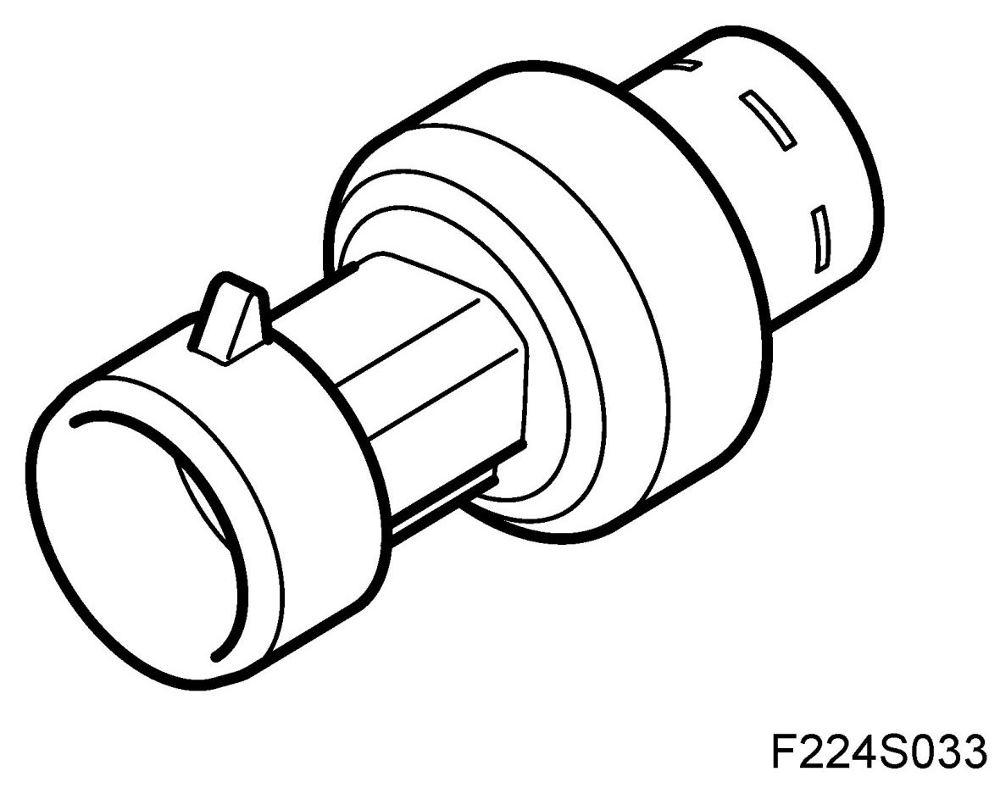
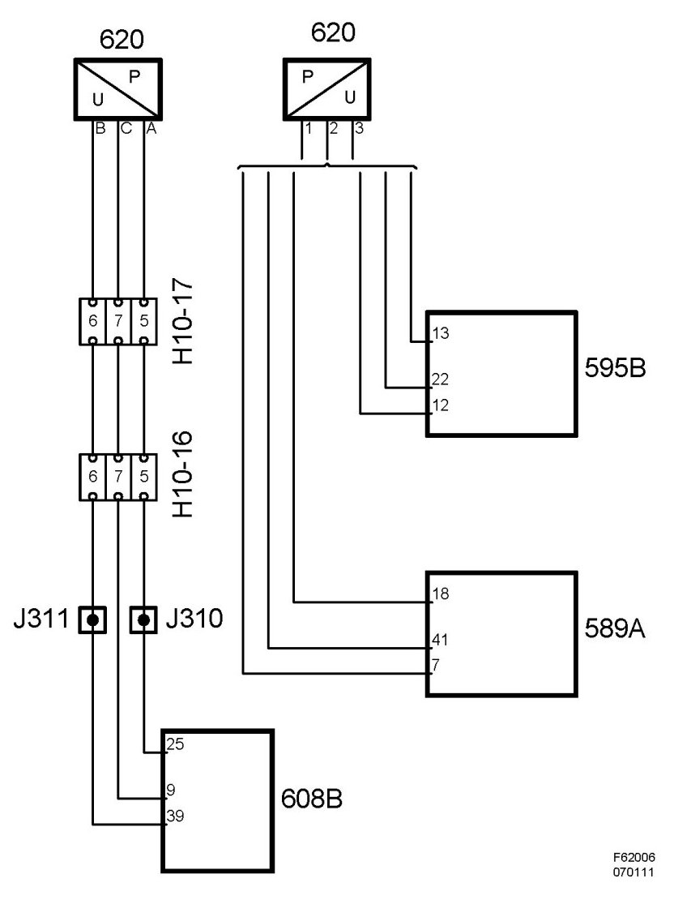
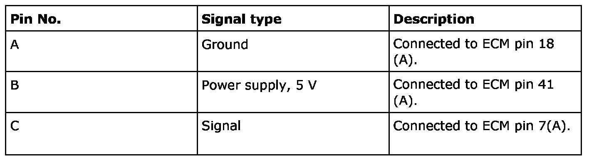

Pressure Sensor, A/C (620) T8
Pressure Sensor, A/C (620) T8
Location
Pressure sensor, A/C (620)
Principal use
The value is used by ECM for load compensation based on the A/C compressor's load on the engine. Also used for radiator fan logic and block conditions (pressure monitor) in the A/C system.
Type
The pressure sensor contains two metal plated ceramic discs mounted in close proximity. The disc located closest to the pressure connection is thinner and bends when subjected to pressure. By this means, capacitance between the metal plating of the discs is changed based on the pressure. A circuit integrated in the sensor converts the capacitance to an analogue voltage.


Connection
T8

The pressure sensor is secured to the A/C pipe of the high-pressure side. Based on the pressure in the intake manifold, the pressure sensor yields a proportional voltage to control module pin A7.